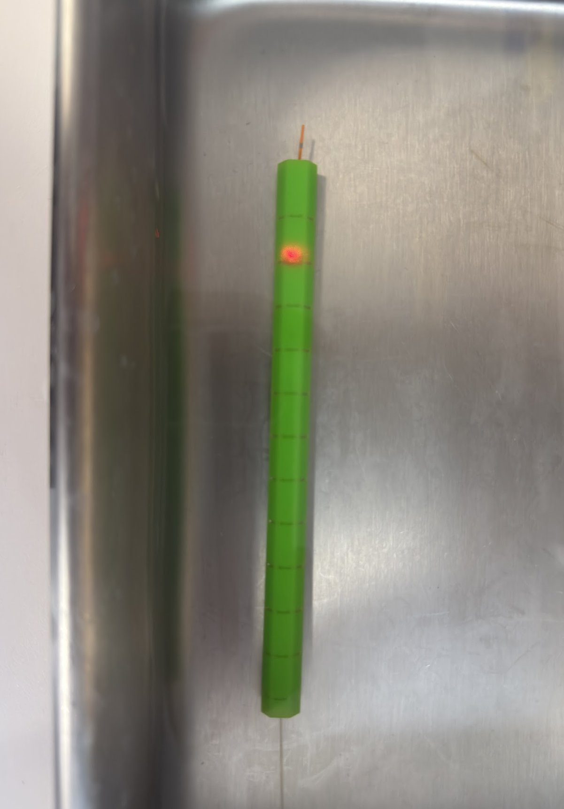
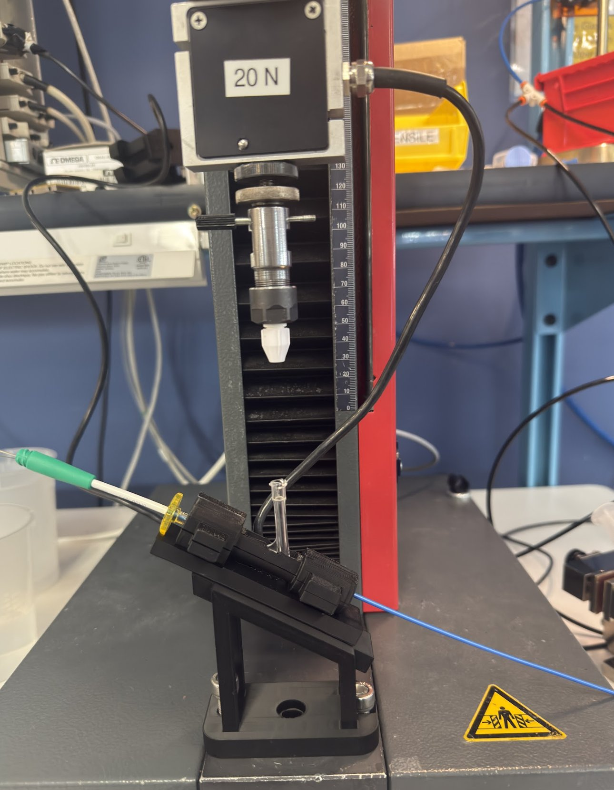

Mechanical Engineering Student
Boston, MA
I am a Mechanical Engineering undergraduate with hands-on experience in regulated medical device development, test engineering, and design verification. I am especially drawn to hands-on engineering work that involves building, testing, and refining systems in environments where precision and reliability are critical.
My interest in engineering started early. In middle school, I began building and repairing computers — diagnosing hardware failures, swapping components, and learning how systems interact at both a physical and logical level. That curiosity naturally expanded into a broader interest in how complex systems are designed, tested, and improved.
Outside of academics and work, I am a car enthusiast who enjoys understanding vehicles beyond the surface level — from performance engineering to mechanical design decisions. This hands-on mindset carries into my engineering work: I enjoy building things, breaking them, understanding why they fail, and making them better. Looking ahead, I want to continue developing my skills within the biomedical device industry while exploring opportunities to apply engineering principles in the automotive space as well.

